neuk · Service design · 2025
neuk is a service for booking private screening rooms, so friends can make streaming a shared night out again.
Problem
Everyone wants to watch together. Nobody has the room.
Three things stop the plan: shows are split across subscriptions, city apartments can’t fit the group, and planning in a group chat is enough friction to cancel it.
Solution
From “we should” to a booked room in one flow.
One person finds a room by size and screen, pays once, and sends everyone a ticket. A QR check-in turns their phone into the room’s remote.
Research
People don’t go to the movies for the movie. They go to be together.
I started with the places people already watch together, theaters and public watch parties, then interviewed people on three questions: how they watch with others, what gets in the way of planning it, and what makes a shared watch worth remembering.
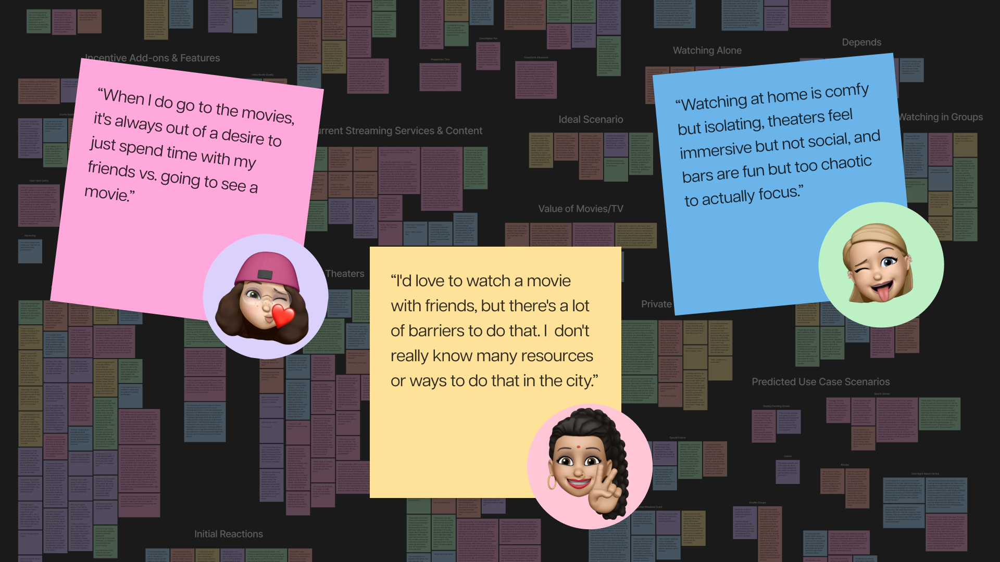
User insights
The pain point isn’t what to watch. It’s that every place to watch together gives something up.
Home, theaters, and public spaces each gave people part of what they wanted, never all of it. That trade-off is what the question below set out to remove.
- People miss the feeling of connection when watching from home.
- Theaters offer great quality but limit interaction and flexibility.
- Public viewing spaces bring energy but often sacrifice comfort and focus.
“When I do go to the movies, it’s always out of a desire to just spend time with my friends vs. going to see a movie.”
“I’d love to watch a movie with friends, but there’s a lot of barriers to do that. I don’t really know many resources or ways to do that in the city.”
“Watching at home is comfy but isolating, theaters feel immersive but not social, and bars are fun but too chaotic to actually focus.”
How might we
create a shared viewing experience that combines the comfort of home, the quality of theaters, and the social energy of public spaces?
The gap
No existing option had all three, so the opportunity was a new kind of place.
Theaters are inflexible, bars are loud, and booking tools ignore how people actually watch together. The category didn’t exist.
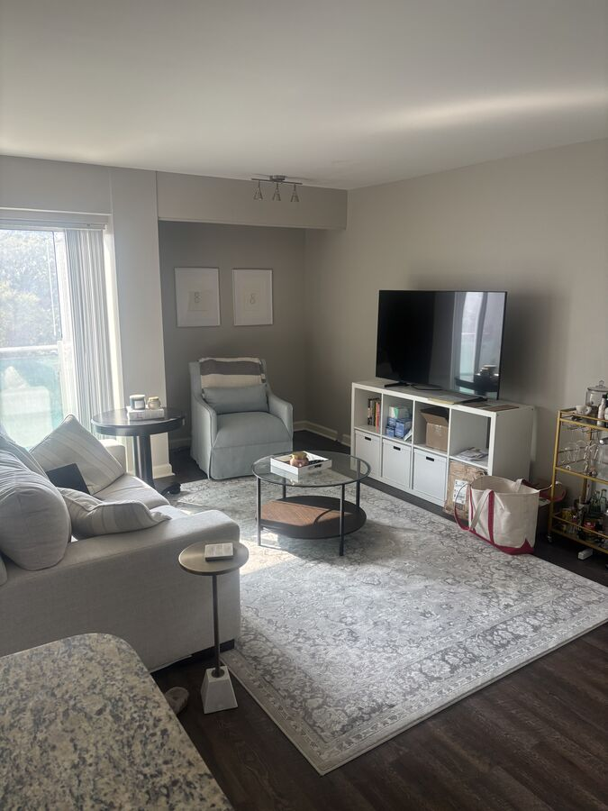
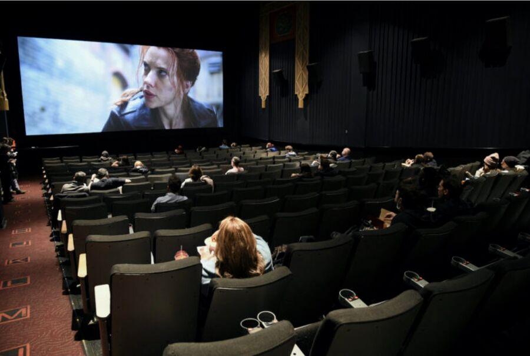
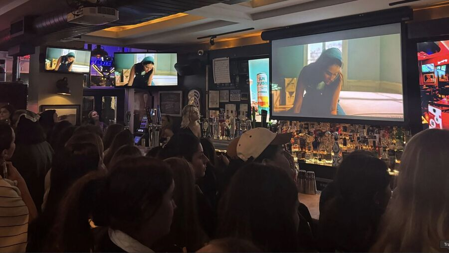
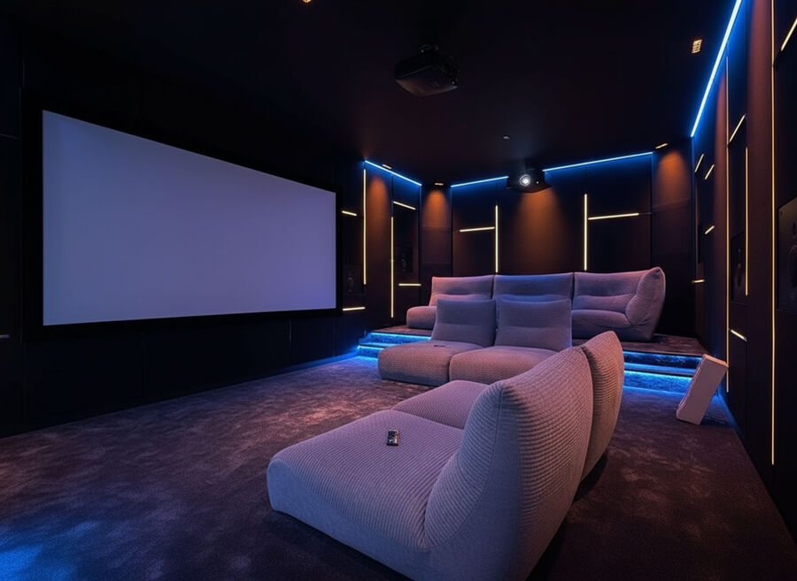
Core flows
The product doesn’t end at checkout: one booking becomes the ticket, the key, and the remote.
Four moments turn a messy plan into a session: discover, book, enter, and come back.
Discover
Match the room to the group.
Filter by date, group size, screen, and price. Room features show up front, not buried in specs.
Book
Intent becomes commitment.
Room detail to payment with a clear cost breakdown, ending in a QR ticket that’s both receipt and room key.
Enter
The phone becomes the room.
Scanning the on-screen QR pairs the phone and unlocks the remote. The product doesn’t end at the door.
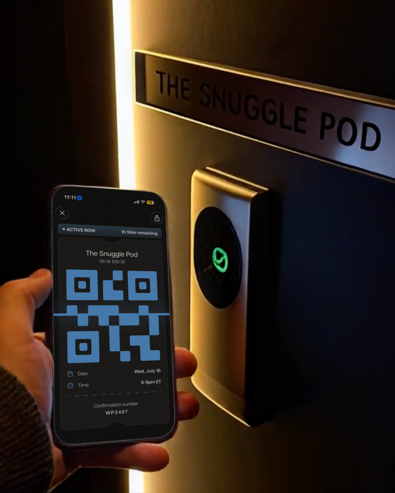
Return
Build the repeat ritual.
Bookings sort into active, upcoming, and past, and favorites make rebooking quick.
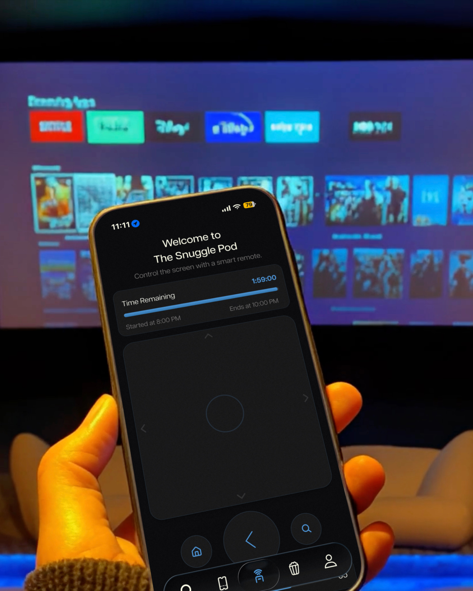
High fidelity
Rooms lead the final design: big photos first, and every size explained before you choose.
Rooms come in three sizes, from a pod for up to four people to a clubhouse for eleven or more, each with its hourly price shown before booking.
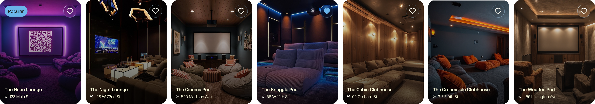
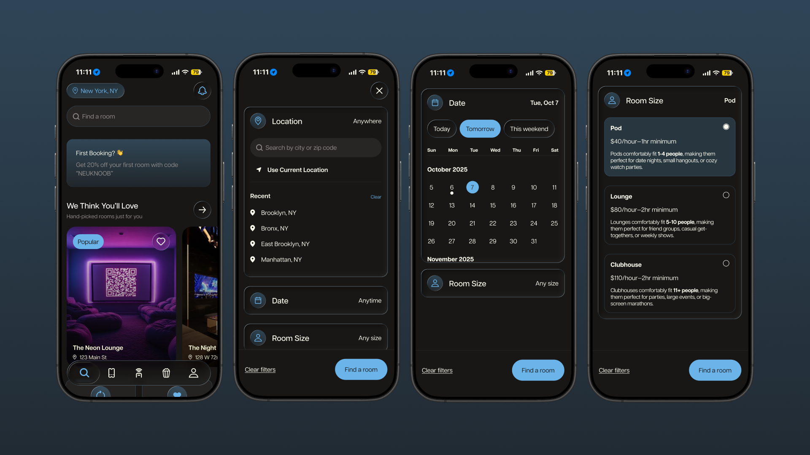
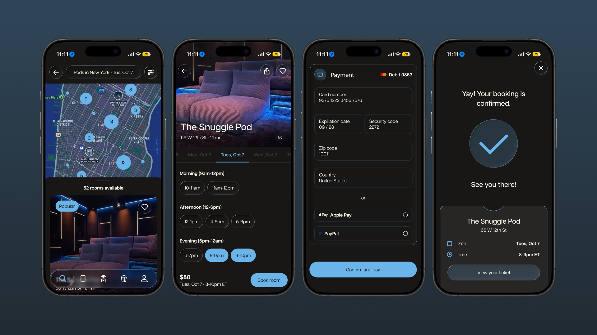
Checking in
The flow ends in a real room, set and waiting when the group walks in.
A reminder lands an hour before (“Your Snuggle Pod is ready in 1 hour”), and staff reset each room between groups, so it’s ready when everyone arrives.
Design decisions
Keep friends in one place, and keep the plan in one flow.
Decision 01
Cut remote watch parties.
An early watch-party prototype solved what to watch, not where to be together. It was one more fragmented tool, so the MVP centered on bookable private rooms.
Decision 02
One flow from discovery to the door.
Discovery, payment, group tickets, and QR access became one flow, so nobody rebuilds the plan from messages.
Iterations
People wanted “cozy but elevated”: the energy of going out with the comfort of home.
Before designing screens, I tested the vibe. Participants filled out a concept testing deck, sorting rooms, food and drink setups, and features into what was and wasn’t their vibe.
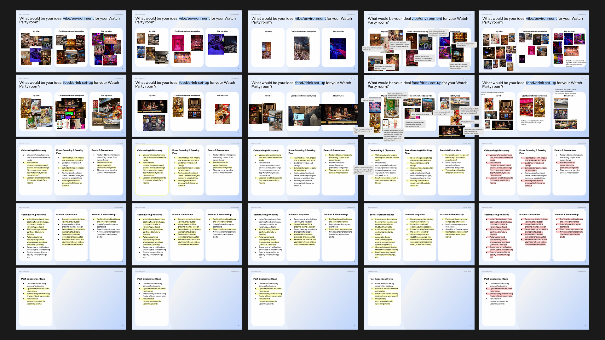
01 · Balance
Not extremesPeople gravitated toward a balance of social energy and homey comfort.
02 · The vibe
Cozy but elevatedThis atmosphere best captured the ideal watch party.
03 · What to avoid
Not a clubParty-like, clubby spaces felt too distracting or impersonal for most.
Directions
Each direction pushed one extreme. The vibe people wanted sat between them.
Lume, the Chromatic Chamber, leaned into the quality of a theater; neuk, the Cozy Collective, into the comfort of home; and Streamie, the Sugar Stream, into the energy of going out.
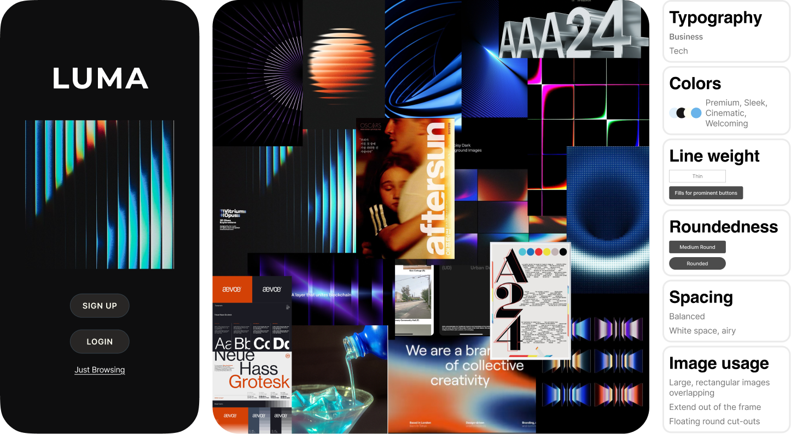
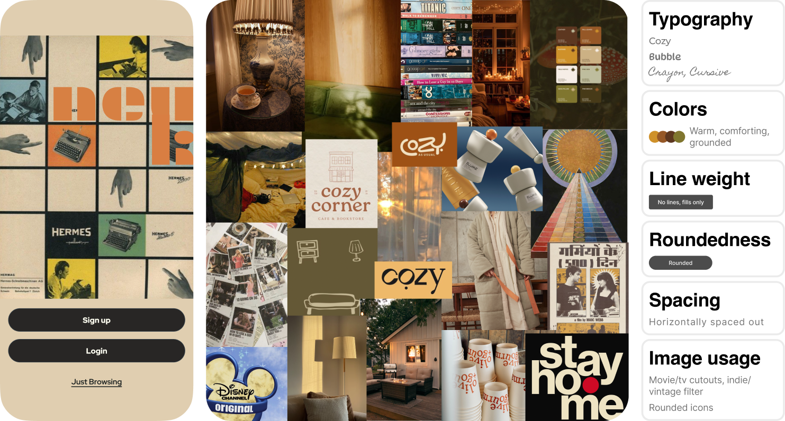
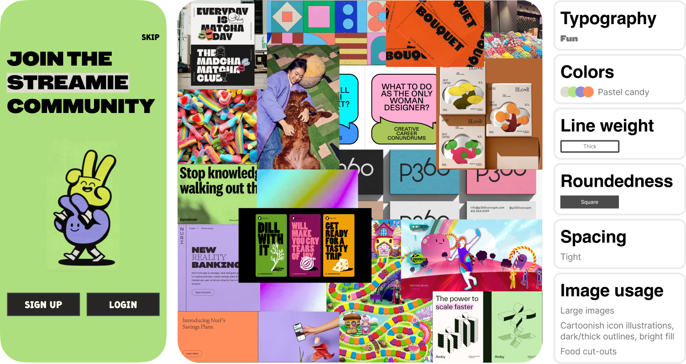
Low-fidelity wireframes
Testers wanted to see more, be told more, and control less.
In one round of testing, 8 users left notes screen by screen, from room cards that were too small to confusion about what happens after booking. Drag or scroll the strip to read them.
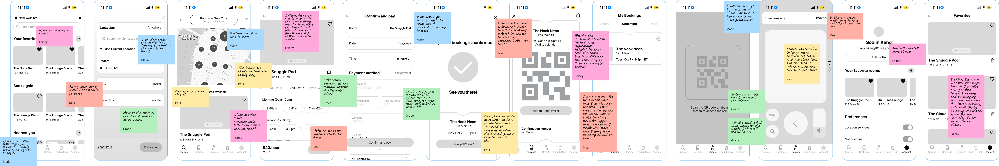
User testing
User testing made the rooms easier to see, the next step clearer, and the remote simpler.
Three of those notes, each tied to a specific change.
System
Every tap in the app has a job in the room, so I designed both as one service.
A service blueprint mapped five stages, discovery, booking, arrival, the session, and after, across what guests do, what they see, what staff do behind the scenes, and the systems underneath. One visit runs from checking in with a QR code, through a door that unlocks and a screen that pairs with your phone, to staff resetting the room for the next group.
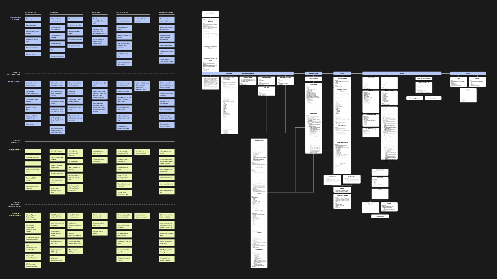
Branding
The final brand sits between the three directions: cinematic enough for a night out, cozy enough to feel like home.
From Lume it kept the dark palette, one blue accent, and thin 1px lines. From neuk, the Cozy Collective, it kept the name itself, “nook” plus 아늑한, Korean for cozy, along with rounded shapes and a warm cream instead of stark white. Streamie’s candy colors and thick outlines were left out, too loud for cozy but elevated.
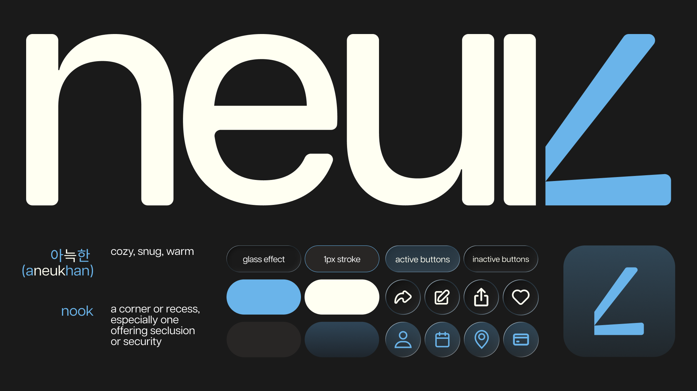
Reflection
Booking was the obvious scope. Getting friends into one room was the real one.
The biggest lesson was where to draw the system boundary, not what to put on screen. Every screen decision rippled into the physical service.
Success would mean repeat bookings: shared viewing becoming a ritual, like karaoke or bowling.
Next, I’d design food and drink ordering, a Splitwise-style way for friends to split the cost in the app, and the in-room screen that brings every streaming service together.
Takeaway
People want the connection of watching together without giving up the comfort of home.